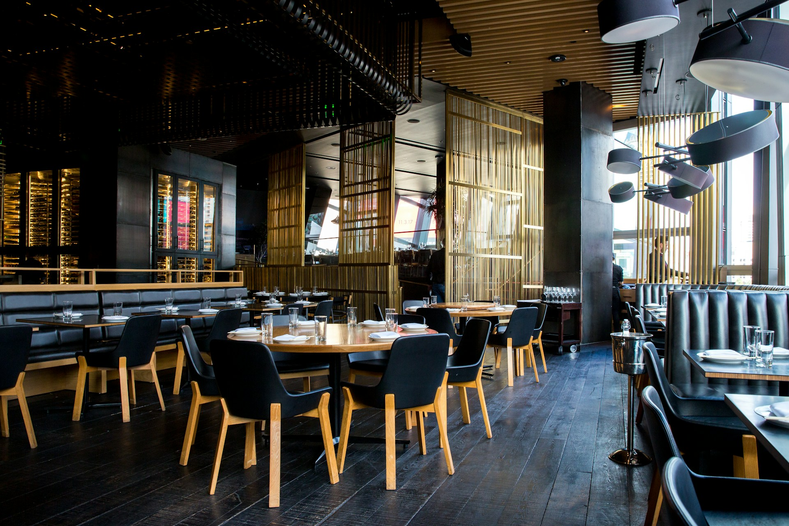

01 / La tavola privata
Il vostro momento,
il vostro spazio.
Una cena raccolta per una ricorrenza o un incontro di lavoro. Menu condiviso, abbinamenti e tempi si pensano insieme.
Immagina la tua cenaUn’occasione speciale, una piccola celebrazione o semplicemente la voglia di stare insieme. Troviamo il ritmo giusto.

Una cena raccolta per una ricorrenza o un incontro di lavoro. Menu condiviso, abbinamenti e tempi si pensano insieme.
Immagina la tua cena
Un percorso di assaggi per conoscere territori e modi diversi di interpretare la vigna. Il cibo accompagna, la curiosità guida.
Leggi gli appunti di cantinaIl concept prevede un percorso dedicato alla tavola privata. Il numero di persone, la disposizione e il menu vengono definiti prima della conferma.
Il percorso Radici è interamente vegetale. Nel sito dimostrativo puoi selezionarlo per esplorare il flusso di prenotazione.
Il modulo ti accompagna nella scelta di esperienza, data e recapiti. In questa demo non viene inviata alcuna richiesta: puoi provare liberamente tutti i passaggi.